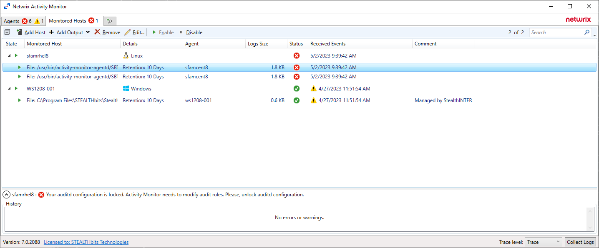

Your auditd configuration is locked. Activity Monitor needs to modify audit rules. Please, unlock auditd configuration.

(figure 1)
This KB article explains why the user can receive such error message and how to handle it.
Activity monitoring for Linux is based on auditd, a part of built-in Linux Auditing System. Netwrix Activity Monitor uses auditd and needs to be able to control it. Therefore Activity Monitor requires write access to auditd configuration (auditctl) and specifically to auditing rules (audit.rules).
There is an 'enabled' flag in auditctl that can lock the rules. When locked, it prevent
the rules from being changed until the system is rebooted.
When auditd configuration
is locked Activity Monitor is not able to control auditing and setup audit rules and
therefore activity monitoring cannot be correctly configured. Activity Monitor is able to
detect the lock and show appropriate error message to the user (Figure 1).
The current version of Activity Monitor (7.0) does not automatically handle the locked
auditd configuration.
When received such error the user needs to manually remove the
lock in order to have activity monitoring enabled. Automatic handling of auditd lock is
planned in next version of the Activity Monitor.
The following commands may be helpful to identify the rule that locks the configuration and disable it:
-
Show current status
auditctl -s
enabled 2
failure 1
pid 1006
rate_limit 0
backlog_limit 8192
lost 0
backlog 0
backlog_wait_time 60000
backlog_wait_time_actual 0
loginuid_immutable 0 unlocked
enabled 2 indicates the locked flag
-
List currently loaded rules
cat /etc/audit/audit.rules
-a always,exit -F dir=/home/maxim/3 -F perm=w -F filetype=dir -k xsfam_000_003_d_w
-a always,exit -F dir=/home/maxim/3 -F perm=a -F filetype=dir -k xxfam_000_003_d_a
--backlog_wait_time 60000
-e 2
-e 2 this is the line that sets the locked flag
-
Find the rule that enables the lock
grep -R "\-e 2" /etc/audit/rules.d
/etc/audit/rules.d/x002.rules:-e 2
/etc/audit/rules.d/x002.rules this is the path to the file containing the locking rule -
Edit the file and remove the locking rule (for example replace -e 2 with -e 1), then reboot the system in order to have the changes applied.